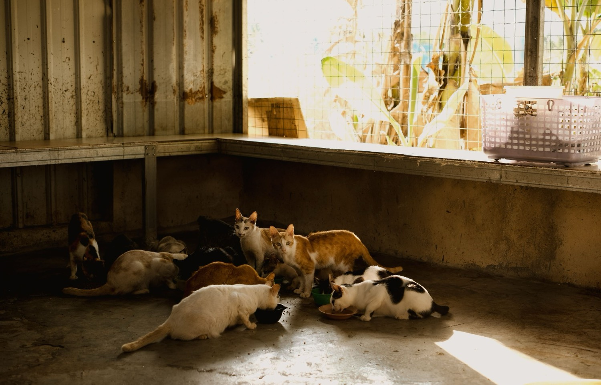
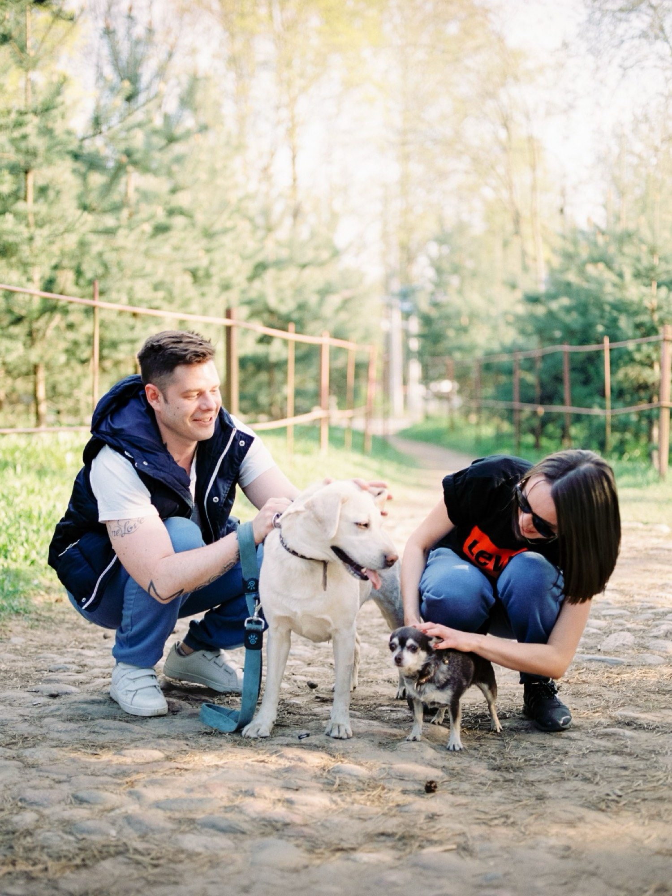

About Paws of Hope

Paws of Hope Animal Rescue is a registered non-profit organisation based in Johannesburg, South Africa. Founded in 2018 by a small group of passionate animal lovers, we began as a foster-home network rescuing dogs and cats from the streets of the East Rand. Today we operate a dedicated shelter, run community sterilisation programmes, and have successfully rehomed more than 2 400 animals.
Our History
What started as weekend rescues and temporary fostering quickly grew as more people joined the cause. In 2020 we secured our first dedicated facility. By 2023 we had expanded our veterinary support partnerships and launched educational workshops in local schools. Every step has been driven by one belief: no healthy animal should be destroyed because of lack of space or resources.
Mission
To rescue, rehabilitate and rehome companion animals while promoting responsible pet ownership through education and community outreach.
Vision
A South Africa where every animal has a safe home and no healthy animal is destroyed due to lack of space or resources.
What We Do
- Rescue abandoned, injured and neglected dogs and cats
- Provide veterinary care, sterilisation, vaccination and rehabilitation
- Carefully match animals with suitable forever homes
- Run community sterilisation and education programmes
- Support a network of foster carers and volunteers
Our Team

Paws of Hope is powered by a small core staff and a large, dedicated group of volunteers and foster carers. Our team includes animal care workers, a part-time veterinarian, administrative volunteers, and community outreach coordinators. Together we work every day to give animals the care and second chance they deserve.
Impact Highlights
- More than 2 400 animals rehomed
- Over 1 800 community sterilisations
- Ongoing school education programmes reaching hundreds of learners each year
- Strong partnerships with local veterinary clinics and animal welfare organisations